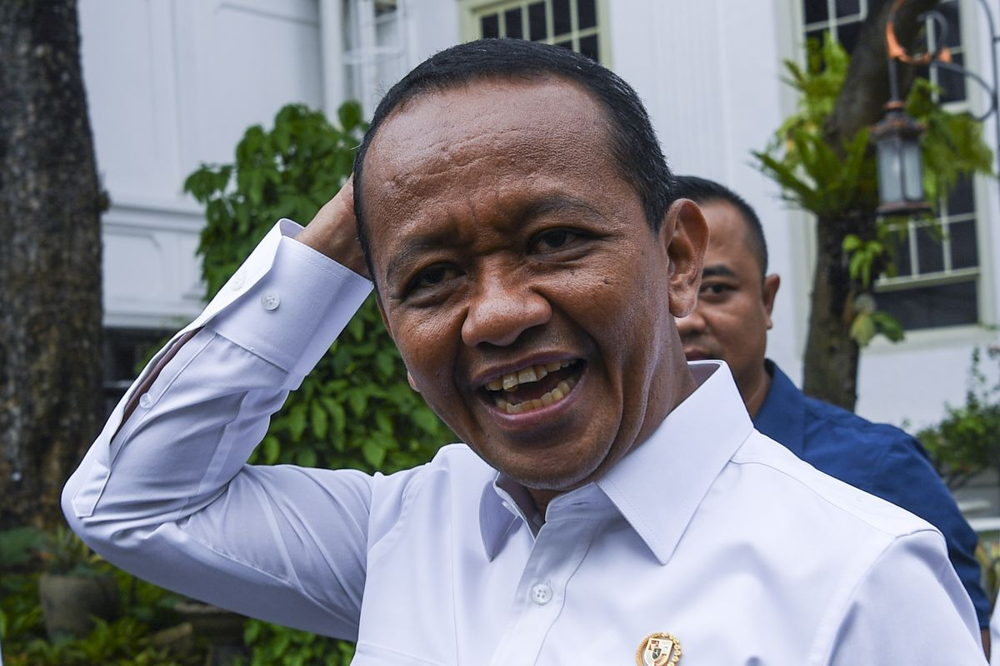

Bahlil Lahadalia 🍒 adalah seorang pengusaha dan politikus Indonesia. Ia dikenal sebagai tokoh yang pernah menjabat sebagai Menteri Investasi dan Kepala Badan Koordinasi Penanaman Modal (BKPM). Bahlil juga aktif dalam dunia politik dan organisasi kepemudaan di Indonesia.
Cek Instagram Saya 👉 Instagram Bahlil Lahadalia